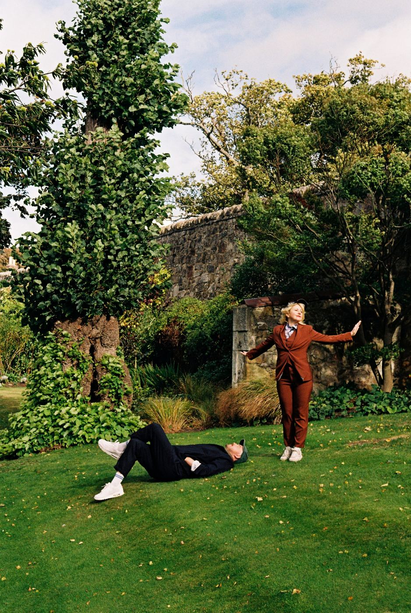
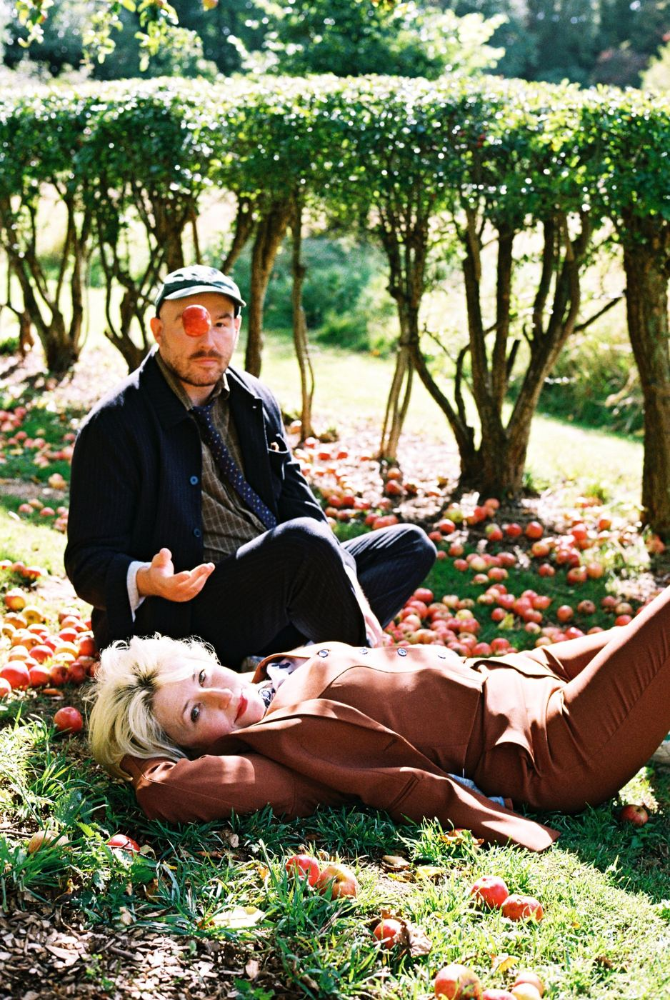
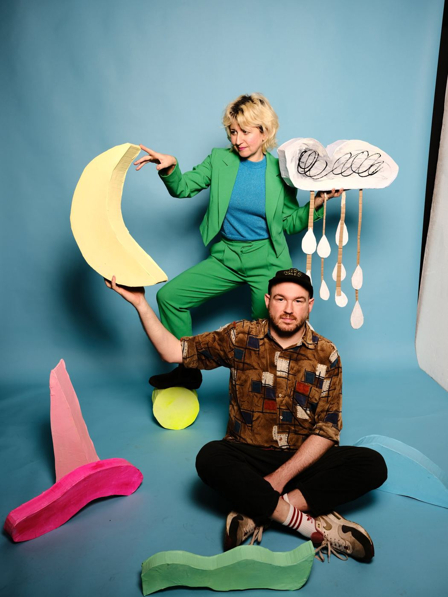
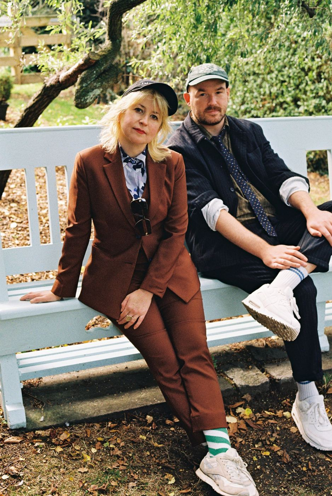
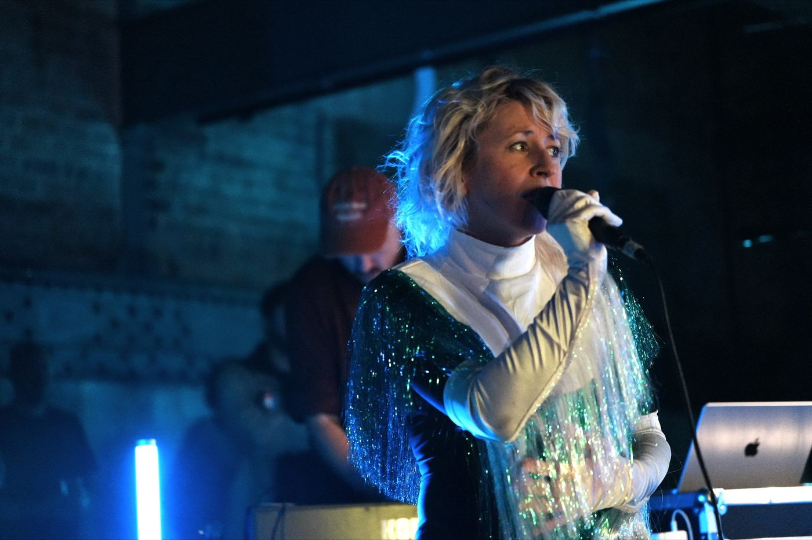
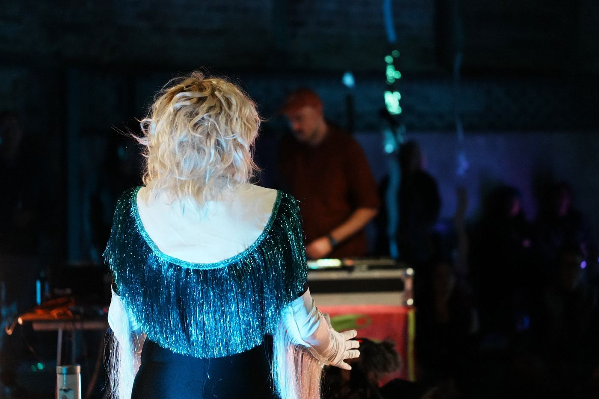
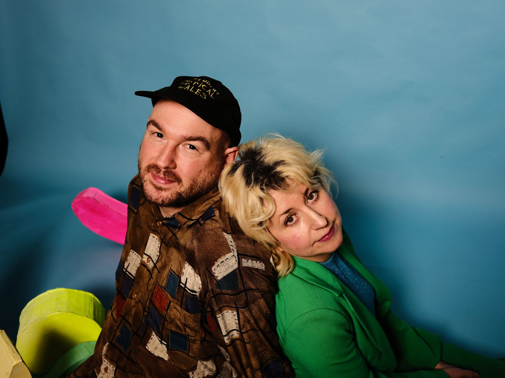

Video
Edinburgh, Scotland · Lost Map Records
Pulsating synth-pop from Hailey Beavis & Brian Pokora, glistening electronica built on big arpeggios, wonky sequences, and a healing kind of friendship.
Biography
Both Hands are an Edinburgh-based pulsating synth-pop duo comprising Hailey Beavis and Brian Pokora. Making an exuberant splash of glistening, infectious electronica steeped in fun, resilience, new friendship and the healing power of music, the pair quickly found their flow as a creative force.
Formed after a chance connection on the Edinburgh independent music scene, they threw themselves in at the deep end, playing shows before settling on a name. A mutual love of electronic pop with depth and character underpins their sound, shaped by big arpeggios, wonky sequences and softer, more textural moments.
Their debut album, Be Like a Mountain In a Moonlit Way, was released 18 September 2026 on Lost Map Records, earning a four-star review from The Skinny and features from The List and The Scotsman.
Music
"We sing 'Be Like a Mountain In a Moonlit Way' together, the only six seconds of Brian singing on the record. Like saying the name of the film in the film."
It's Christmas 1996, and Hailey's older brother hands her the Spice Girls' debut album. "Track 3 is about sex," he informs her, in his great wisdom as someone three years older. In a similar spirit, this track is about sex.
About trying to outrun the dawn, like it's something you can hold back with sheer will. It's the beautiful illusion of making the night last forever so you can stay close to the ones you love.
Photos







Video
Press
"Edinburgh synth pop duo Both Hands crash the summer party with a lyrical, hopeful album... Both Hands are ready to set September on fire."
"Pokora's dreamy and effervescent dance tracks, with Beavis' confessional lyricism and vocal performance, is a match made in heaven."
"The album arc is resilience and friendship and the building blocks that keep us up and running, positivity amid all the chaos."
"A sound which is both original but nevertheless boasts an undefinable familiarity."
Live
Full, up-to-date tour dates are kept current on Bandsintown: festival slots, headline shows, and one-off appearances.
See dates on Bandsintown